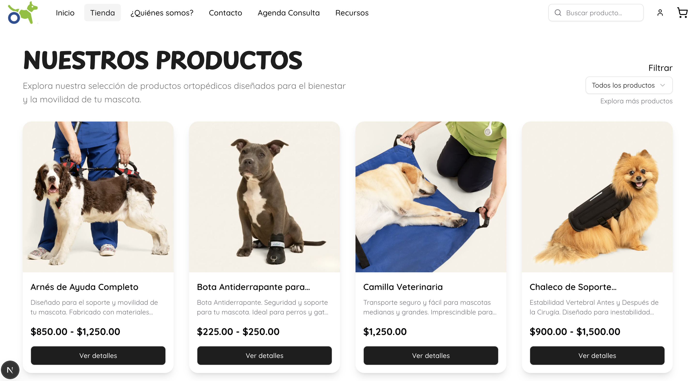
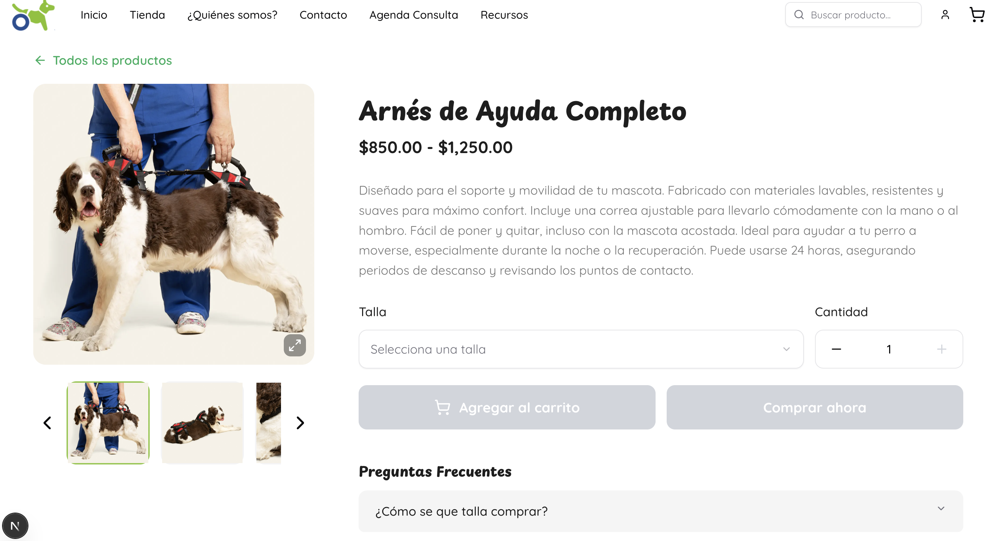
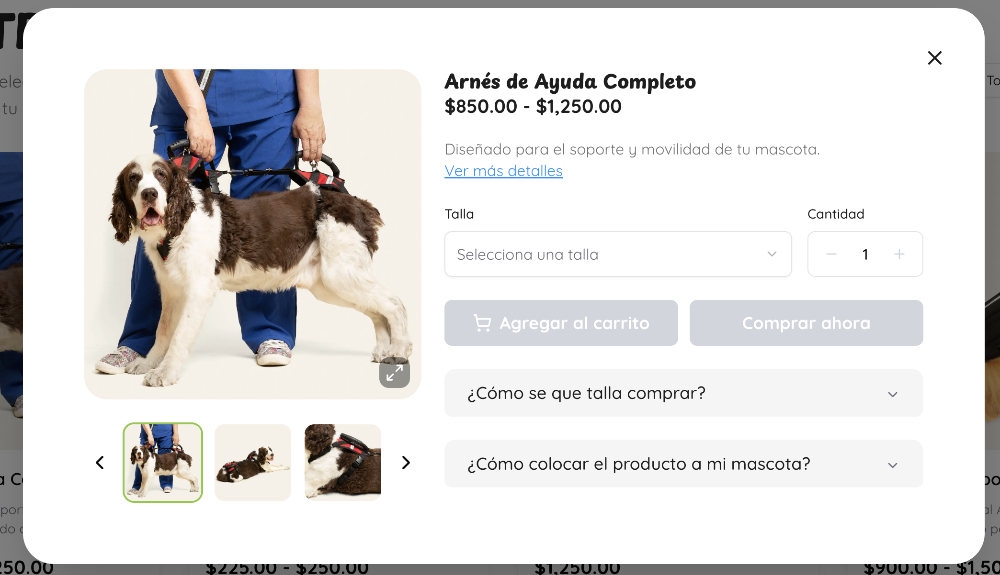
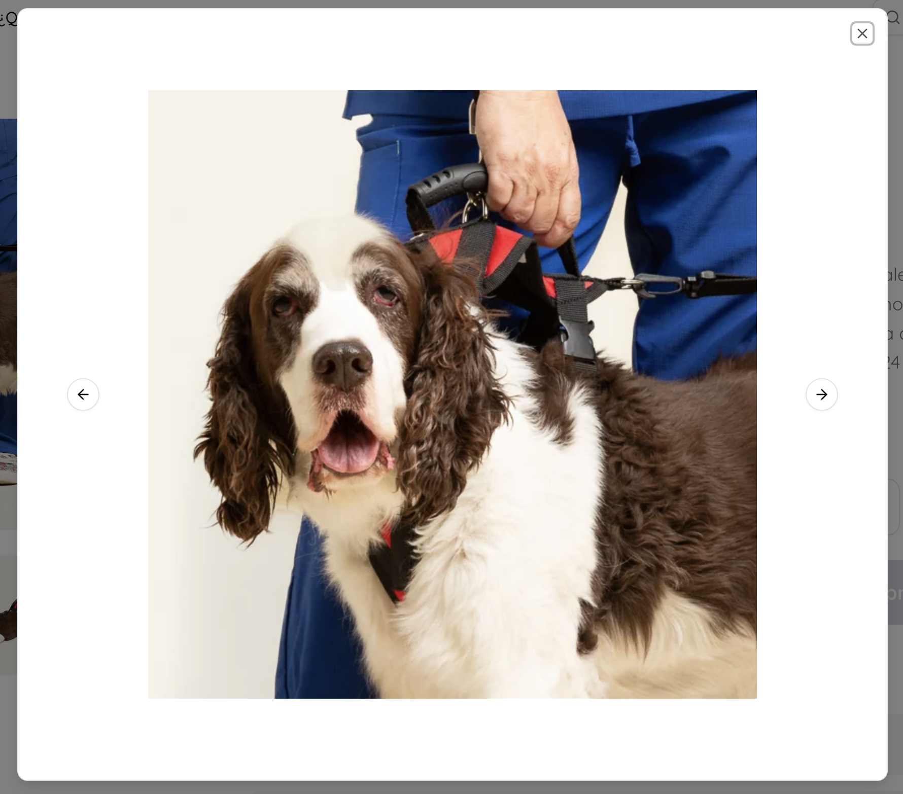
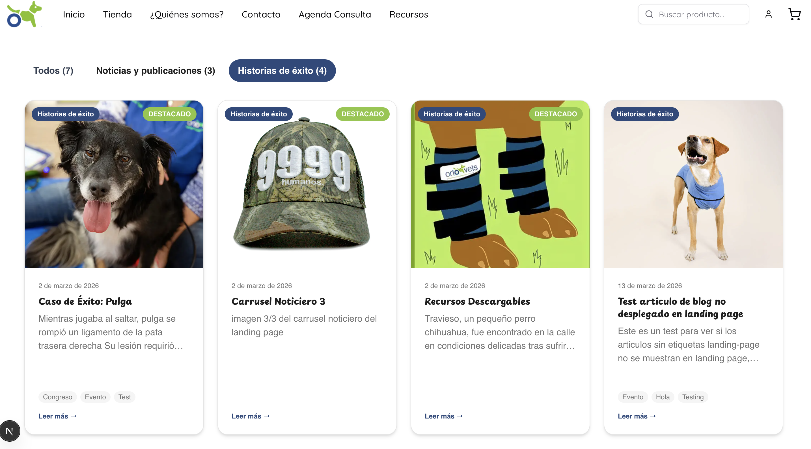
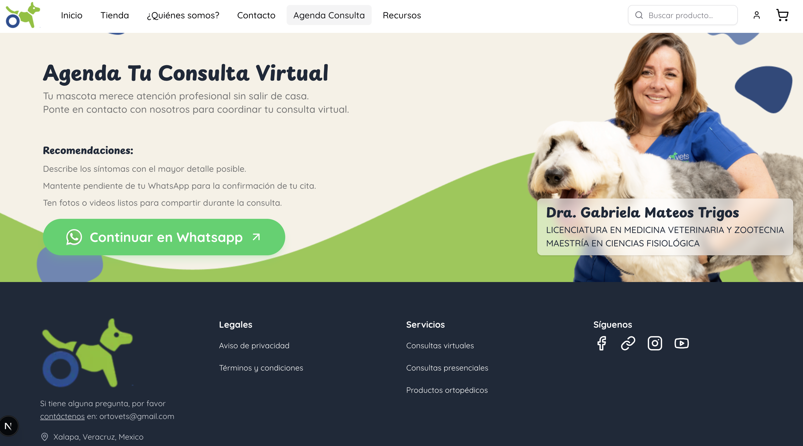
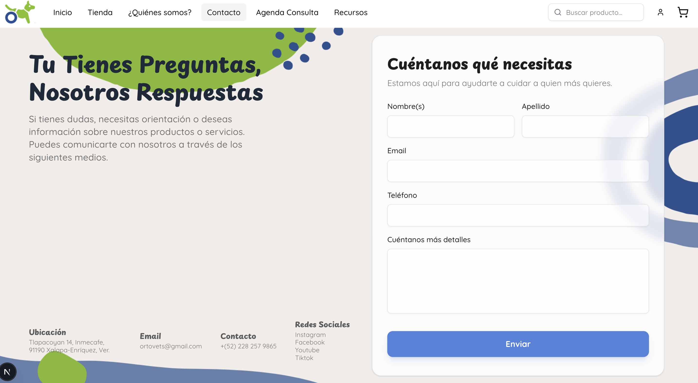

Ortovets
E-commerce de productos ortopédicos para mascotas, desarrollado con React + Node.js
Ortovets es una tienda en línea especializada en productos ortopédicos para mascotas (arneses, botas antiderrapantes, camillas y chalecos de soporte). El proyecto incluye catálogo con filtros, fichas de producto, vista rápida y zoom de imágenes, blog de historias de éxito, agenda de consultas virtuales enlazada a WhatsApp y formulario de contacto.

Catálogo de la tienda
Página de productos con filtros de búsqueda y tarjetas que muestran nombre, rango de precios y disponibilidad para perros y gatos.

Página de producto
Ficha de detalle de cada producto con galería de imágenes, rango de precios, selector de talla y cantidad, botones de compra y preguntas frecuentes.

Vista rápida (modal)
Ventana flotante que permite revisar los detalles y las imágenes de un producto sin salir del catálogo.

Zoom de imágenes
Visor de imágenes en pantalla completa con navegación entre fotos, para apreciar el detalle de cada producto.

Blog: historias de éxito
Sección de noticias y casos de éxito de mascotas atendidas, organizada por categorías y con artículos destacados.

Agenda de consulta virtual
Formulario para agendar una consulta veterinaria virtual, con recomendaciones previas y redirección directa a WhatsApp para confirmar la cita.

Formulario de contacto
Formulario de contacto con los datos de ubicación, correo, teléfono y redes sociales del negocio.